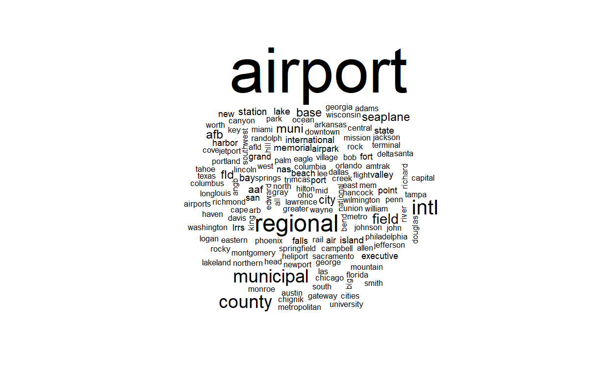
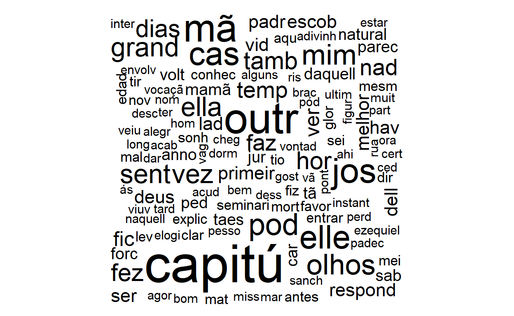
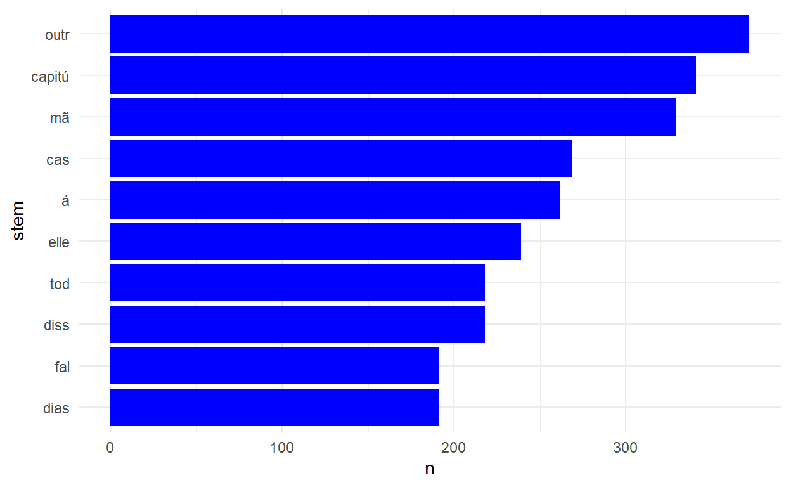
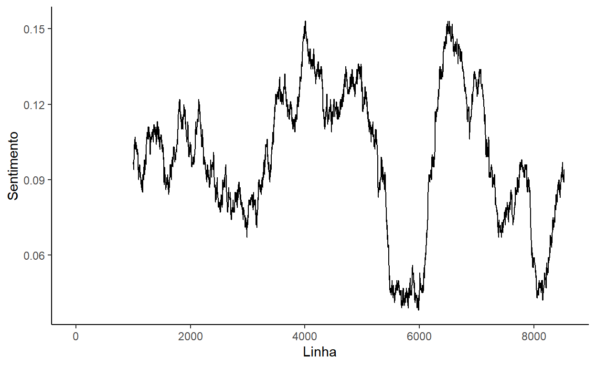

Table of Contents
O que há em uma palavra? (str_length, str_detect)
Palavras e conjuntos de caracteres são coisas complexas que podemos manipular e transformar da mesma forma que processamos números. É importante entender que R trata todas os textos/as palavras como ‘strings’: conjuntos sequencias de caracteres específicas. Por exemplo, veja o string do nome do primeiro aeroporto no banco de dados airports de nycflights13.
library("nycflights13")
library("tidyverse")
airports %>% slice(1) %>% pull(name)
[1] "Lansdowne Airport"O pacote stringr fornece uma variedade de funções para trabalhar com strings, todos começando com str_. O mais fácil é medir o número de caracteres com str_length():
airports <- airports %>% mutate(caracteres=str_length(name))Uma tarefa comum é identificar a presença de um string com str_detect(). Por exemplo, queremos identificar os aeroportos que contém a palavra ‘field’ (a descrição de um aeroporto pequeno):
airports <- airports %>% mutate(string_field=str_detect(name, "Field"))Observe que o resultado aqui é verdade/falsa (TRUE/FALSE). Quantos “field”s temos nos Estados Unidos - podemos usar a nova coluna para contar.
airports %>% group_by(string_field) %>%
tally()| string_field | n |
|---|---|
| FALSE | 1386 |
| TRUE | 72 |
Identificando strings é um tema de programação enorme, pois não precisamos usar uma palavra exata e fixa; podemos usar um ‘modelo’ genérica para capturar uma variadade de possibilidades. Isso se chama um ‘regex’, uma ‘expressão regular’. Por exemplo, para capturar aeroportos que contém ‘Regional’ ou ‘Rgnl’, usamos o símbolo ‘|’ (como em filter).
airports %>% mutate(string_regional=str_detect(name, "Regional|Rgnl")) %>%
filter(string_regional==TRUE) %>%
select(name)| name |
|---|
| Schaumburg Regional |
| Finger Lakes Regional Airport |
| Phoenix Regional Airport |
| Apalachicola Regional Airport |
| Abilene Rgnl |
| Aberdeen Regional Airport |
| Southwest Georgia Regional Airport |
| Jimmy Carter Regional |
| Waco Rgnl |
| Augusta Rgnl At Bush Fld |
Que tal identificamos os nomes que começam com ‘Z’. Para detectar caracteres apenas no início do string, usamos ‘^’. Para detectar caracteres apenas no final do string, usamos ‘$’ depois do caracter.
airports %>% mutate(string_z=str_detect(name, "^Z")) %>%
filter(string_z==TRUE) %>%
select(name)| name |
|---|
| Zachar Bay Seaplane Base |
| Zamperini Field Airport |
As possibilidades são complexas - por exemplo, é possível identificar os nomes que contém pelo menos dois ’f’s ou ’g’s juntos com o modelo abaixo:
airports %>% mutate(string_ffgg=str_detect(name, "[fg]{2,}")) %>%
filter(string_ffgg==TRUE) %>%
select(name)| name |
|---|
| Jefferson County Intl |
| Effingham Memorial Airport |
| Jefferson County Airpark |
| Griffin-Spalding County Airport |
| Biggs Aaf |
| Buffalo Niagara Intl |
| Flagstaff Pulliam Airport |
| McDuffie County Airport |
| Jefferson City Memorial Airport |
| Coffman Cove Seaplane Base |
Não se preocupe com todos os detalhes do ‘regex’ de texto - são complexos e impossível de lembrar, mas se precisar no futuro, pode utilizar a referência na segunda página do cheatsheet de stringr aqui.
Habilidade Básica de Programação: Transformando PDFs em Texto Editável
Um dos formatos mais comuns para a disponibilização de textos é o PDF, um formato não editável. Porém na maioria dos casos é fácil traduzir um PDF em texto simples que o R pode entender. Usamos o pacote pfdtools e a função pdf_text().
Por exemplo, vamos abrir um artigo recente da Revista Brasileira da Ciência Política.
#install.packages("pdftools")
library("pdftools")
artigo <- tibble(páginas=pdf_text("https://cutt.ly/Sy4vi7F"))Qual é o resultado de pdf_text()? É um vetor de strings - um para cada página no PDF. E para conveniência nós já inserimos o vetor como uma coluna de um tibble.
Transformando Strings (str_replace, str_split)
Quando recebemos um banco de dados com strings, existe uma variação incrível no uso de palavras, refletindo o estilo e contexto do documento. Mas queremos trabalhar apenas com strings que nos interessamos. Isso exige a manipulação e substituição de strings complexos ou sujos.
Por exemplo, vamos substituir as instâncias de ‘Rgnl’ com ‘Regional’ com str_replace para deixar os strings mais consistente. Os argumentos são a coluna do tibble que contém os strings, o modelo (um regex) de caracteres para identificar, e, em seguida, o string para substituir.
airports <- airports %>% mutate(name=str_replace(name, "Rgnl", "Regional"))Ou, por exemplo, podemos substituir os hífens com um espaço para padronizar os strings, alguns que usam hífens e outros não:
airports <- airports %>% mutate(name=str_replace(name, "-", " "))Observe que os nomes dos aeroportos são geralmente compostos por várias palavras - se quisemos manter apenas a primeira palavra, temos que dividir o string único em vários partes. Nessa situação, usamos a função str_split, especificando um string (um regex) para o local da divisão. Por exemplo, para separar cada palavra temos que dividir por espaço:
airports <- airports %>% mutate(nome_parcial=str_split(name, " "))Como fica o resultado? Cada linha tem um vetor com os palavras únicas separadas. Note que o cumprimento do vetor varia para cada linha - pode ter 1, 2, 3 ou mais elementos, dependendo do número de espaços no string original. Podemos selecionar, por exemplo, a primeira palavra, aproveitando da função map do tutorial passado, e usando ‘1’ para pedir o primeiro elemento do vetor, ou tail para pedir o último elemento:
airports <- airports %>% mutate(nome_parcial_primeiro=map_chr(nome_parcial, 1))
airports <- airports %>% mutate(nome_parcial_final=map_chr(nome_parcial, tail, n=1))Lembre-se da função separate() do Tutorial 3? É bem parecida com str_split(). A diferença é que o produto de separate não é simplesmente um vetor - é distribuido em colunas novas dentro do nosso tibble. Isso é muito conveniente, mas exige que determinamos o número de parcelas em que dividimos o string em avanço. Por exemplo, com separate() fica mais difícil encontrar o último palavra do nome do aeroporto como calculamos acima.
separate() é mais útil quando temos um formato fixo com um número de parcelas previsível. Por exemplo, podemos dividir a coluna tzone entre os partes antes e depois do ‘/’:
airports <- airports %>% separate(tzone, "/", into=c("País", "Região"))Vale a pena pensar bem se str_split() (dentro de mutate()), ou separate() é mais apropriado em cada situação.
Habilidade Básica de Programação: Caracteres de Escape
Em algumas situações, é difícil identificar ou dividir por um caractere quando esse caractere é usado no código de programação mesmo. Por exemplo, definimos o string para dividir entre aspas: "", mas é possível querer dividir um string por aspas, por exemplo para dividir uma citação do autor.
Como faremos? Temos que usar um indicador específico - um Caractere de ‘Escape’ para informar R que queremos tratar o caractere como parte do string e não como parte do código de programação. O Caractere de ‘Escape’ em R é ‘\’. Então precisamos indicar “\”" para dividir por aspas. E se queremos dividir pela barra em si “\”?? Usamos quatro! “\\\\”.
Visualizando Strings
Um jeito comum de apresentar a frequência de strings é um nuvem de palavras - um ‘wordcloud’ - que exige os pacotes wordcloud e tm.
#install.packages("wordcloud")
#install.packages("tm")
library("wordcloud")
library("tm")
airports %>% pull(name) %>% wordcloud()
Exercício 1: Trabalhando com Strings
- No banco de dados
airlinesdo pacotenycflights13, qual porcentagem dos nomes das companhias aéreas contém a palavra ‘Airlines’ e qual porcentagem contém a palavra ‘Airways’?
airlines %>% mutate(airlines=str_detect(name, "Airlines")) %>%
group_by(airlines) %>%
tally() %>%
mutate(Pct=100*(n/sum(n)))
airlines %>% mutate(airlines=str_detect(name, "Airways")) %>%
group_by(airlines) %>%
tally() %>%
mutate(Pct=100*(n/sum(n)))- No mesmo banco, Substitua os nomes das companhias aéreas que contém ‘Inc.’ com ‘Incorporated’, e eles que contém ‘Co.’ com ‘Company’. (Observe que ‘.’ é um caracter especial, então tem que buscar ele com ‘\\.’).
airlines
airlines <- airlines %>% mutate(name=str_replace(name, "Inc\\.", "Incorporated"),
name=str_replace(name, "Co\\.", "Company"))- Gere um nome curto para cada companhia aérea, refletindo apenas a primeira palavra do nome.
airlines <- airlines %>% mutate(nome_curto=str_split(name, " "),
nome_curto=map_chr(nome_curto, 1))- Crie um ‘wordcloud’ dos nomes das companhias aéreas.
airlines %>% pull(name) %>% wordcloud()Tokenizer e Padronizar o Texto (unnest_tokens)
Para os fins de análise de texto queremos simplificar e padronizar as milhões de variedades que cada língua permite para que podemos reconhecer a presença das mesmas palavras/sentidos mesmo em contextos diferentes. Por exemplo, a mesma palavra pode aparecer em vários formatos: ‘Regional’, ‘regional’, ‘Rgnl’, ‘Region’, ‘region’, ‘Regionally’, ‘regionally’ etc. Mas todos representam o mesmo ‘conceito’ e queremos reconhecer que eles estão falando do mesmo conceito quando analisamos o texto.
Para ilustrar as possibilidades com um texto mais completo, vamos acessar o texto inteiro do livro “Dom Casmurro” de Machado de Assis, disponível no site do Project Gutenberg. Podemos usar o pacote gutenbergr para acessar o texto em um formato bem conhecido - um tibble. O pacote permite baixar o texto por código numérico.
# install.packages("gutenbergr")
# install.packages("urltools") #Se necessário; depende do sistema
library("gutenbergr")
library("urltools")
#http://www.gutenberg.org/cache/epub/55752/pg55752.txt #Machado de Assis, Dom Casmurro
Assis <- gutenberg_download(55752)Temos que limpar e organizar o texto antes de usar. Por motivos chatos e técnicos, o próximo código converte o encoding para UTF-8, e depois tira manualmente as linhas do início e final que não foram parte do livro original. Aproveitamos para também adicionar uma nova coluna capturando o número da linha no livro, para facilitar restreando as linhas ao longo da análise.
Assis <- Assis %>%
mutate(text=iconv(text, from = "latin1", to = "UTF-8")) %>%
select(-gutenberg_id) %>%
slice(21:8549) %>%
rownames_to_column("Linha") Agora observe que cada linha do tibble ‘Assis’ é uma linha do livro, enquanto a nossa unidade de análise normalmente é cada palavra. Então a nossa primeira tarefa é separar as linhas em palavras (‘tokenize’). As seguintes funções são dos pacotes tidytext, textstem e lexiconPT, então lembre-se de instalar eles uma vez e abrir as bibliotecas depois.
# install.packages("tidytext")
# install.packages("textstem")
# install.packages("lexiconPT")
library("tidytext")
library("textstem")
library("lexiconPT")Desaggregar linhas em palavras exige a função unnest_tokens(), com dois argumentos: o nome da nova coluna que contém as palavras, ‘palavra’, e o nome da coluna que contém o texto por linha, ‘text’.
Assis_palavras <- Assis %>% unnest_tokens(palavra, text)Agora, ‘Assis_palavras’ tem muito mais linhas, uma para cada palavra. Perfeito.
A próxima tarefa é a simplificação e padronização dessas palavras, e isso involve vários passos:
- Tirar Pontuação: Frases contém pontuação, mas normalmente não importa se há uma vírgula ou não depois de uma palavra para identificar a presença do conceito no texto. A pontuação é tirada automaticamente por
unnest_tokens(). Se quiser, pode desligar para manter a pontuação:
Assis %>% unnest_tokens(palavra, text, strip_punct=F)- Tirar Maiúsculas: Também queremos ignorar se as palavras estejam em letras minúsculas ou maiúsculas, e padronizar, por exemplo, para minúsculas. De novo, isso é o padrão de
unnest_tokens(), mas podemos desligar se quisemos:
Assis %>% unnest_tokens(palavra, text, to_lower=F)- Tirar Números: O nosso texto contém vários números (anos, etc.) que não são relevante para uma análise de texto. Não é a opção padrão, mas podemos tirar os números facilmente:
Assis_palavras <- Assis %>% unnest_tokens(palavra, text, strip_numeric=TRUE)- Tirar stopwords: É comum tirar palavras pequenas e genéricas como ‘o’, ‘a’, ‘e’ etc. que são universais e não diferenciam o conteúdo dos textos. Essas palavras se chamam ‘stopwords’. Tira-las exige mais um passo, aproveitando de um banco de dados de stopwords com a função
get_stopwords()para a língua apropriada. Inspecione o conteúdo dela.
stopwords <- get_stopwords(language="pt") %>%
rename(palavra=word)
stopwords
Assis_palavras <- Assis_palavras %>% anti_join(stopwords, by="palavra")| palavra | lexicon |
|---|---|
| de | snowball |
| a | snowball |
| o | snowball |
| que | snowball |
| e | snowball |
| do | snowball |
| da | snowball |
| em | snowball |
| um | snowball |
| para | snowball |
Lembrando que queremos manter as linhas em ‘Assis_palavras’ que não existem no banco de get_stopwords(), o jeito mais eficiente é usar um anti_join().
Assis_palavras <- Assis_palavras %>% anti_join(stopwords, by="palavra")A lista de stopwords não é nada oficial; são apenas as palavras que não nos interessamos. Por exemplo, por algum motivo a lista de stopwords aqui falta a palavra ‘é’, que é muito comum e não acrescenta nada sobre o conteúdo do texto. Nós podemos manualmente estender a lista de stopwords, adicionando mais linhas no tibble stopwords.
stopwords <- stopwords %>% add_row(palavra="é", lexicon="pessoal")
Assis_palavras <- Assis_palavras %>% anti_join(stopwords, by="palavra")- ‘Stem’ as palavras Mais um passo de processamento é a padronização de variedades da mesma palavra - uma técnica que se chama ‘stemming’. Por exemplo, português tem milhares de conjugações de cada verbo: ‘saber’, ‘sei’, ‘soube’ etc. que significam o mesmo conceito. O que nos interessamos é o raiz (o ‘stem’) consistente da palavra. Usamos a função
stem_words()para adicionar mais uma coluna ao nosso tibble com a raiz das palavras, de novo especificando a língua apropriada.
Assis_palavras <- Assis_palavras %>% mutate(stem=stem_words(palavra, language="pt"))Agora veja a coluna ‘stem’ do tibble: observe o contraste entre ‘palavra’, e ‘stem’. Por exemplo, ambos ‘encontrei’ e ‘encontrou’ se tornam ‘encontr’. A padronização simplifica o base de dados bastante - de 8.728 a 4.824 palavras distintas.
Assis_palavras %>% distinct(palavra)
Assis_palavras %>% distinct(stem)Frequência de Palavras
Agora que temos um banco de dados textuais padronizado, podemos começar a analisar o conteúdo das palavras de Machado de Assis. Primeiramente, vamos estimar a frequência de uso das palavras, ou mais especificamente as raizes.
Podemos visualizar a frequência das raizes (stems) das palavras com um wordcloud, como mostramos acima. (Vamos pedir uma amostra das linhas para acelerar o processamento).
Assis_palavras %>% sample_n(2000) %>%
pull(stem) %>%
wordcloud()
Também podemos identificar as palavras (os ‘stems’ na verdade) mais frequentes usando as nossas habilidades bem conhecidas do tidyverse.
Assis_palavras %>% group_by(stem) %>%
tally() %>%
arrange(-n)| stem | n |
|---|---|
| outr | 372 |
| capitú | 341 |
| mã | 329 |
| cas | 269 |
| á | 262 |
| elle | 239 |
| diss | 218 |
| tod | 218 |
| dias | 191 |
| fal | 191 |
Observe que alguns dessas palavras não são interessantes e não descreve bem o conteúdo do texto então podem ser bons candidatos para tirar na lista de stopwords, por exemplo ‘á’. E para visualizar os resultados num gráfico de barras:
Assis_palavras %>% group_by(stem) %>%
tally() %>%
top_n(10, n) %>%
mutate(stem=fct_reorder(stem, n)) %>%
ggplot() +
geom_col(aes(y=stem, x=n), fill="blue") +
theme_minimal()
Finalmente, podemos interrogar o banco de texto para a presença de uma palavra específica, por exemplo o stem ‘govern’:
Assis_palavras %>% filter(stem=="govern")| Linha | palavra | stem |
|---|---|---|
| 183 | governou | govern |
| 185 | governou | govern |
| 4986 | governo | govern |
| 5162 | governasse | govern |
Há quatro instâncias no texto, em três formas diferentes da palavra.
Análise de Sentimento
O ‘Dom Casmurro’ é um livro otimista ou pessimista? Cada palavra tem um significando complexo, sútil e contextual. Porém, existem bancos de dados que avaliam o ‘sentimento’ de cada palavra. O pacote lexiconPT fornece o banco oplexicon_v3.0. Nós precisamos apenas juntar o banco de dados de sentimentos com o nosso banco de palavras:
sentimento <- oplexicon_v3.0 %>% select(term, polarity) %>%
rename(palavra=term)
Assis_palavras <- Assis_palavras %>% left_join(sentimento, by="palavra")| Linha | palavra | stem | polarity |
|---|---|---|---|
| 2 | i | i | NA |
| 4 | titulo | titul | NA |
| 6 | noite | noit | NA |
| 6 | destas | dest | NA |
| 6 | vindo | vind | -1 |
| 6 | cidade | cidad | NA |
| 6 | engenho | engenh | NA |
| 6 | novo | nov | 1 |
| 6 | encontrei | encontr | NA |
| 7 | trem | trem | NA |
Observe que muitas palavras - as palavras ‘neutras’ - não existem no banco de dados de sentimentos, então a coluna ‘polarity’ tem valor NA. Podemos avaliar o sentimento ‘média’ do livro com summarize. Um valor positivo significa um texto mais otimisto na média, e um valor negativo um texto mais pessimisto na média:
Assis_palavras %>% summarize(sentimento=mean(polarity, na.rm=T))| sentimento |
|---|
| 0.1157649 |
O resultado positivo sugere que o livro é mais otimisto do que pessimisto na média. A análise também permite identificar as linhas mais otimistas e pessimistas do livro inteiro se agrupamos por linha e calcula a soma dos sentimentos contidos na linha (palavras positivas menos palavras negativas):
Assis_palavras %>% mutate(Linha=as.numeric(Linha)) %>%
group_by(Linha) %>%
summarize(polarity=sum(polarity, na.rm=T)) %>%
arrange(-polarity) %>%
slice(1, n())| Linha | polarity |
|---|---|
| 7500 | 6 |
| 1403 | -4 |
Ok, mas quais são as linhas 7500 e 1403? Temos que voltar ao banco de dados de linhas ‘Assis’ (não ‘Assis_palavras’) e filtrar por essas linhas:
Assis %>% filter(Linha==7500) %>% pull(text) #Linha mais otimista
[1] "activo, coração recto, amigo, bom amigo, digno da esposa amantissima"
Assis %>% filter(Linha==1403) %>% pull(text) #Linha mais pessimista
[1] "pouco, um intrigante, um bajulador, um especulador, e, apezar da casca"Faz sentido, sim? Os nossos dados permitem responder a mais uma pergunta interessante: Como desenvolve o sentimento ao longo do livro? Podemos usar o nosso resumo por linha, completar as linhas faltandas (que faltam palavras em nosso banco de dados de sentimentos) com complete, e encaminhar para ggplot para criar um gráfico de linhas.
Assis_palavras %>% mutate(Linha=as.numeric(Linha)) %>%
group_by(Linha) %>%
summarize(polarity=sum(polarity, na.rm=T)) %>%
complete(Linha=1:8527, fill=list(polarity=0)) %>%
ggplot() +
geom_line(aes(x=Linha, y=polarity)) +
theme_classic() +
ylab("Sentimento")
O gráfico não é fácil interpretar porque há tantas observações e variação página por página. Uma forma de melhorar a apresentação da linha é calcular uma ‘média móvel’, que ‘suavizar’ os dados de sentimento. O pacote zoo fornece a função rollapply que podemos aplicar dentro de um mutate para calcular a média móvel de cada janela de 1000 linhas.
library("zoo")
Assis_palavras %>% mutate(Linha=as.numeric(Linha)) %>%
group_by(Linha) %>%
summarize(polarity=sum(polarity, na.rm=T)) %>%
complete(Linha=1:8527, fill=list(polarity=0)) %>%
mutate(polarity_rolling=rollapply(polarity, 1000, mean, align='right', fill=NA)) %>%
ggplot() +
geom_line(aes(x=Linha, y=polarity_rolling)) +
theme_classic() +
ylab("Sentimento")
O fluxo do livro é mais evidente agora - periódos otimistas antes de linha 5000 e depois de linha 6500, e periódos mais pessimistas cerca de linhas 6000 e 8000. Se você conheça o livro, pode nos ajudar a verificar se seja verdade!
Ngrams
Por que estamos trabalhando com palavras únicas? Não é obrigatório - podemos dividir o texto em várias formas. Por exemplo, podemos identificar pares de palavras - cada vez que um par de palavras - ‘grande gato’ - aparecem juntos. Isso se chama um ‘bigram’. A lógica de processamento é bem parecida com a rotina para palavras únicas. É só especificar token=ngrams e n=2 na função de unnest_tokens().
Assis_bigrams <- Assis %>% unnest_tokens(bigram, text,
token="ngrams", n=2)Tirando os stopwords exige um pouco mais trabalho com bigrams - temos que separar eles em palavras distintas, tirar cada instância de um stopword, e juntar de novo:
Assis_bigrams <- Assis_bigrams %>%
separate(bigram, c("palavra1", "palavra2"), sep=" ") %>%
anti_join(stopwords, by=c("palavra1"="palavra")) %>%
anti_join(stopwords, by=c("palavra2"="palavra")) %>%
unite("bigram", c(palavra1, palavra2), sep=" ", remove=F)
Assis_bigrams %>%
group_by(bigram) %>%
tally() %>%
arrange(-n)| bigram | n |
|---|---|
| NA NA | 2472 |
| josé dias | 147 |
| prima justina | 47 |
| tio cosme | 45 |
| outra vez | 28 |
| póde ser | 27 |
| á porta | 26 |
| outra cousa | 26 |
| padre cabral | 22 |
| alguma cousa | 21 |
O bigram mais comum (exceto ‘NA NA’ que devemos tirar) é “josé dias”, presumivalvmente um personagem, e, em seguida, “prima justina”.
Trabalhando com bigrams ajuda identificar ao lado de quais outras palavras uma palavra aparece. Por exemplo, quais palavras aparecem ao lada da palavra ‘familia’?
Assis_bigrams %>% filter(palavra1=="familia") %>% pull(palavra2)
[1] "imitar" "padua" "saía" "elle" "certa"
[6] "dizia" "lembro" "fernandes" "avisa" "hoje"
[11] "pendura" "tornar"
Assis_bigrams %>% filter(palavra2=="familia") %>% pull(palavra1)
[1] "mesma"Parece que ‘familia’ aparece ao lado de ‘imitar’, ‘avisa’, ‘pendura’, etc., fornecendo um pouco de contexto.
Ngrams são bigrams com mais de duas palavras - vamos identificar o mais comum ‘trigram’ (com três palavras):
Assis_trigrams <- Assis %>% unnest_tokens(trigram, text,
token="ngrams", n=3)
Assis_trigrams <- Assis_trigrams %>%
separate(trigram, c("palavra1", "palavra2", "palavra3"), sep=" ") %>%
anti_join(stopwords, by=c("palavra1"="palavra")) %>%
anti_join(stopwords, by=c("palavra2"="palavra")) %>%
anti_join(stopwords, by=c("palavra3"="palavra")) %>%
unite("trigram", c(palavra1, palavra2, palavra3), sep=" ", remove=F)
Assis_trigrams %>%
group_by(trigram) %>%
tally() %>%
arrange(-n)| trigram | n |
|---|---|
| NA NA NA | 2696 |
| josé dias achou | 4 |
| serás feliz bentinho | 4 |
| 1 070 000 | 3 |
| aggregado josé dias | 3 |
| após alguns instantes | 3 |
| ceu oh flòr | 3 |
| dez libras esterlinas | 3 |
| oh flòr candida | 3 |
| póde ser tambem | 3 |
Um dos trigrams mais comuns é “josé dias achou”.
Exercício 2: Analisando um Documento
- Escolhe um livro da sua preferência no site de Projeto Gutenberg, e abre ele em R usando o código do projeto.
Branco <- gutenberg_download(26913) %>%
mutate(text=iconv(text, from = "latin1", to = "UTF-8")) %>%
select(-gutenberg_id) %>%
rownames_to_column("Linha") - ‘Tokenizar’ o seu livro em palavras, tirando a puntuação, os números, os stopwords, virando as caracteres em minúsculo, e as palavras em seus stems (raízes).
Branco_palavras <- Branco %>% unnest_tokens(palavra, text, strip_numeric=TRUE) %>%
anti_join(stopwords, by="palavra") %>%
mutate(stem=stem_words(palavra, language="pt"))- Identifique os dez stems mais frequentes no seu livro.
Branco_palavras %>% group_by(stem) %>%
tally() %>%
top_n(10, n) %>%
arrange(-n)- Aplique uma análise de sentimento ao texto para identificar as linhas mais otimistas e mais pessimistas do texto.
Branco_palavras <- Branco_palavras %>% left_join(sentimento, by="palavra")
Branco_palavras %>% mutate(Linha=as.numeric(Linha)) %>%
group_by(Linha) %>%
summarize(polarity=sum(polarity, na.rm=T)) %>%
arrange(-polarity) %>%
slice(1, n()) %>%
kable()
Branco %>% filter(Linha==594) %>% pull(text) #Linha mais otimista
Branco %>% filter(Linha==2881) %>% pull(text) #Linha mais pessimistaComparando Documentos
É possível trabalhar além de uma descrição de um livro único e comparar o conteúdo de documentos distintos. Para isso, precisamos distinguir documentos (livros ou artigos distintos) e termos (palavras ou ngrams em um documento). O jeito mais fácil de realizar isso é juntar vários documentos no mesmo tibble, com uma coluna adicional que indica com qual documento cada palavra é associada.
Primeiramente, temos que abrir mais um documento para comparar com o livre de Machado de Assis. Vamos pegar o livro português de Jules Verne, ‘Da terra á lua’ de Projeto Gutenberg:
#http://www.gutenberg.org/cache/epub/28341/pg28341.txt #Jules Verne, 'Da terra à lua'
Verne <- gutenberg_download(28341) %>%
mutate(text=iconv(text, from = "latin1", to = "UTF-8")) %>%
select(-gutenberg_id) %>%
slice(71:7229) %>%
rownames_to_column("Linha")E vamos processar o banco de dados para padronizar o conteúdo e gerar os stems, para que o banco de dados fica no mesmo formato que o livro de Machado de Assi:
Verne_palavras <- Verne %>% unnest_tokens(palavra, text, strip_numeric=TRUE) %>%
anti_join(stopwords, by="palavra") %>%
mutate(stem=stem_words(palavra, language="pt"))Agora precisamos juntar os dois bancos, ‘Assis_palavras’ e ‘Verne_palavras’ em um tibble único, adicionando uma coluna identificadora para preservar o livro relevante. Também precisamos contar a frequência de cada palavra, para que podemos comparar a frequência entre os dois livros. Para deixar os resultados mais fácil a interpretar, vamos trabalhar com as palavras mesmas em vez dos stems:
Assis_prep <- Assis_palavras %>%
group_by(palavra) %>%
tally() %>%
mutate(document="Assis")
Verne_prep <- Verne_palavras %>%
group_by(palavra) %>%
tally() %>%
mutate(document="Verne")Para juntar os dois bancos, usamos bind_rows():
Assis_Verne <- Assis_prep %>% bind_rows(Verne_prep)Frequência Relativa de Palavras (bind_tf_idf)
Quais palavras distinguem o melhor os dois livros? Ou seja, há palavras frequentes que existem nos dois livros (palavras comuns, tipo ‘pessoa’, ‘rua’), e há palavras que são comuns e específicas para cada livro, que ajudam a caracterizar o conteúdo distinto do livro.
A medida que é usada na análise de texto é a frequência do termo (‘tf’) multiplicado pelo frequência inversa do termo no documento (‘idf’) - o ‘tf-idf’. Os termos com os maiores valores da medida ‘tf-idf’ são os termos que são mais presentes em um documento e não no outro.
Calculamos a medida com a função bind_tf_idf(), que exige três argumentos - a coluna que contém as palavras, a coluna que indica em qual documento aparece cada palavra, e a coluna que resuma a frequência de cada palavra no documento:
Assis_Verne_idf <- Assis_Verne %>% bind_tf_idf(palavra, document, n)Em seguida, é fácil identificar as palavras mais distintas para cada livro:
Assis_Verne_idf %>%
group_by(document) %>%
top_n(5, tf_idf)| document | palavra | n | tf_idf |
|---|---|---|---|
| Assis | capitú | 341 | 0.0065044 |
| Assis | della | 82 | 0.0015641 |
| Assis | escobar | 110 | 0.0020982 |
| Assis | josé | 160 | 0.0030519 |
| Assis | seminario | 85 | 0.0016213 |
| Verne | ardan | 143 | 0.0029992 |
| Verne | barbicane | 256 | 0.0053692 |
| Verne | club | 123 | 0.0025797 |
| Verne | maston | 143 | 0.0029992 |
| Verne | projectil | 147 | 0.0030831 |
Os resultados indicam que no livro de Assis, as palavras mais distintas incluem ‘josé’, ‘escobar’, ‘capitú’ - os personagens centrais do livro. Na mesma forma, as palavras mais distantas do livro de Verne incluem ‘ardan’, ‘barbicane’, e ‘maston’, os personagens centrais. Isso é comum porque são essas nomes que são muito usados e distinguem os livros.
Modelagem de Tópicos
Uma alternativa para compara documentos é uma técnia de clusterização que divide automaticamente (sem supervisão) o conjunto de documentos em temas, ou ‘tópicos’. Os tópicos são definidos pelo uso de conjuntos de palavras distintas, e cada documento é uma mistura de tópicos (ex. 90% A e 10% B). Essa técnica é útil para dizer que alguns documentos são mais parecidas que outras.
Primeiramante, precisamos transformar o nosso tibble dos dois livros em um ‘matriz de documento-termo’, uma ferramenta bem usada no mundo de análise de texto, com a função cast_dtm(), indicando como argumentos a coluna que identifica o documento, a coluna que contém as palavras (termos), e a coluna que conta a frequência de cada palavra.
Assis_Verne_dtm <- Assis_Verne %>%
cast_dtm(document, palavra, n)Com o nosso matriz de documento-termos, usamos a função LDA() do pacote topicmodels para classificar o conteúdo textual automaticamente (usando o modelo de Latent Dirichlet Allocation - LDA). Vamos especificar que queremos classificar os livros em quatro tópicos por enquanto.
#install.packages("topicmodels")
library("topicmodels")
Assis_Verne_LDA <- LDA(Assis_Verne_dtm, 4)O resultado de LDA() pode ser transformado em nosso amigo, o tibble, com a função tidy() do pacote broom(), o mesmo que usamos com regressões, especificando o matriz ‘gamma’.
library("broom")
Assis_Verne_LDA_documentos <- Assis_Verne_LDA %>% tidy(matrix='gamma')
Assis_Verne_LDA_documentos| document | topic | gamma |
|---|---|---|
| Assis | 1 | 0.4238592 |
| Verne | 1 | 0.0000018 |
| Assis | 2 | 0.5761375 |
| Verne | 2 | 0.0000018 |
| Assis | 3 | 0.0000016 |
| Verne | 3 | 0.6557172 |
| Assis | 4 | 0.0000016 |
| Verne | 4 | 0.3442792 |
O resultado indica quanto cada tópico aparece em cada livro. O livre de Assis é 42% tópico 1, 58% tópico 2, 0% tópicos 3 e 4, enquanto o livro de Verne é 0% tópico 1 e 2, 66% tópico 3 e 34% tópico 4. Ou seja - cada livro contém dois tópicos e os tópicos não se sobrepõem aos livros.
Mas o que representam esses tópicos? Não sabemos - eles não tem uma descrição fixa; são definidas pelo algoritmo e nós temos que interpretar o significado de cada tópico. Para facilitar isso, podemos inspecionar as palavras mais associadas com cada tópico. Pedimos o relacionamento entre os tópicos e as palavras (em vez dos documentos) com o matriz ‘beta’ em tidy(). O ‘beta’ reflete a probabilidade que a palavra é associado com o tópico.
Assis_Verne_LDA_palavras <- Assis_Verne_LDA %>% tidy(matrix='beta')Agora, podemos identificar as palavras mais frequentes em cada tópico:
Assis_Verne_LDA_palavras %>% group_by(topic) %>%
top_n(5, beta) %>%
arrange(topic, -beta)| topic | term | beta |
|---|---|---|
| 1 | tudo | 0.0086138 |
| 1 | á | 0.0085267 |
| 1 | tambem | 0.0068205 |
| 1 | ella | 0.0064950 |
| 1 | agora | 0.0063633 |
| 2 | capitú | 0.0118561 |
| 2 | elle | 0.0084712 |
| 2 | dias | 0.0078440 |
| 2 | mãe | 0.0071768 |
| 2 | ser | 0.0066741 |
| 3 | á | 0.0087607 |
| 3 | barbicane | 0.0079236 |
| 3 | lua | 0.0076624 |
| 3 | todos | 0.0048421 |
| 3 | gun | 0.0048236 |
| 4 | havia | 0.0089316 |
| 4 | maston | 0.0086029 |
| 4 | j | 0.0085580 |
| 4 | barbicane | 0.0074075 |
| 4 | ardan | 0.0071698 |
A nossa tarefa agora é resumir qual tópico é representada, por exemplo, pelo conjunto de palavras ‘capitú’, ‘elle’, ‘dias’, ‘mãe’, e ‘ser’ - pode ser que eles aparecem frequentemente em diálogo que envolvem o personagem ‘capitú’ e a sua mãe, por exemplo. Cada tópico não é óbvio, mas para o computador parece que eles formam tópicos coerentes presentes nos dois livros.
Em outras aplicações o modelagem de tópicos é uma forma poderosa de identificar temas pareceidas em conjuntos grandes de documentos sem ter que ler todos os documentos.
Exercício 3: Comparando Documentos
- Copiar-colar um texto que você mesmo escreveu de pelo menos um parágrafo e salve ele dentro de um tibble em R.
meu_texto <- tibble(text = "A Organização Mundial da Saúde (OMS) disse nesta terça-feira (9) que a 'transmissão por casos assintomáticos está ocorrendo, a questão é saber quanto'. O esclarecimento da entidade internacional ocorre após comentário da chefe do programa de emergências da entidade, Maria van Kerkhove, de que a transmissão da Covid-19 por pacientes sem sintomas da doença parece ser 'rara'.`Kerkhove também voltou a se pronunciar nesta terça e explicou que as pesquisas estão em andamento. Ela disse que recebeu 'muitas mensagens da noite para o dia' e que achou importante esclarecer o mal-entendido. 'A maioria das transmissões que conhecemos ocorre por pessoas com sintomas que transmitem o vírus por meio de gotículas infectadas. Mas há um subconjunto de pessoas que não desenvolvem sintomas', explicou. 'Para realmente entender quantas pessoas não têm [os sintomas], pois ainda não temos essa resposta, existem algumas estimativas. Elas sugerem que entre 6% e 41% da população podem estar com o vírus, mas não apresentar os sintomas'.")- ‘Tokenizar’ o seu texto em palavras, tirando a puntuação, os números, os stopwords, virando as caracteres em minúsculo, e as palavras em seus raízes (stems).
meu_texto_palavras <- meu_texto %>% unnest_tokens(palavra, text, strip_numeric=TRUE) %>%
anti_join(stopwords, by="palavra") %>%
mutate(stem=stem_words(palavra, language="pt"))- Junte dois textos tokenizados em um tibble com uma coluna que diferencia o documento e uma coluna que conta a frequência de cada palavra: (i) o texto seu que você identificou acima em questão 1, e (ii) o livro que você usou em exercício 2.
Branco_prep <- Branco_palavras %>%
group_by(palavra) %>%
tally() %>%
mutate(document="Branco")
meu_texto_prep <- meu_texto_palavras %>%
group_by(palavra) %>%
tally() %>%
mutate(document="Meu Texto")
dois_textos <- Branco_prep %>% bind_rows(meu_texto_prep) - Calcule a medida ‘tf_idf’ para identificar as 5 palavras mais distintas de cada documento. Em qual sentido o seu documento é diferente do livro?
dois_textos %>% bind_tf_idf(palavra, document, n) %>%
group_by(document) %>%
top_n(5, tf_idf)Desafio 5
O Desafio 5 teste a sua capacidade de juntar bancos de dados e e gerar gráficos apropriados e claros.
O prazo para entregar Desafio 5 por email com título “[FLS6397] - D5” à minha conta é 26/06/2020, antes da aula. Por favor entregue (i) o arquivo .Rmd (ou .Rnw se preferir), e (ii) o arquivo .html ou .PDF.